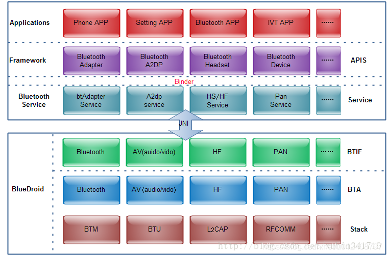
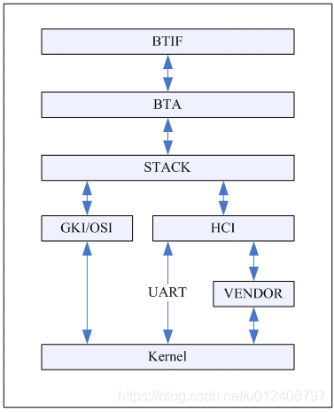

android bt structure
android bt 架构
参考文档
bt 架构
Android系统蓝牙的整体架构

Applications：Android蓝牙应用程序，就是使用蓝牙的API的程序；
Framework：提供给应用使用的API，我们平时使用的BluetoothAdapter，BluetoothDevice，BluetoothSocket等；
Bluetooth Service：即Bluetooth APP(Bluetooth.apk)这个应该也是属于java framework范畴，不过由于它比较特殊，所以独立出来，提供所有的上层服务以及与Bluedroid底层进行交互。其中btAdapter主要提供蓝牙的基本操作，比如enable, disable, discovery, pair, unpair, createRfcomm等，其他的就都是Profile的各自的Service了;
Bluedroid：蓝牙协议栈，提供所有蓝牙的实际操作，开关蓝牙，蓝牙的管理，搜索管理，链路管理，各种profile的实现，包括HCI，ACL，SCO，L2CAP，各种profile等
整个系统的架构很简单，因为大多的事情都是在Bluedroid层里面做的，上层只管去Call和Callback就是了，这部分我们在后面分析代码做详细分析。
蓝牙的的入口主要有setting与systemui，这两个apk的蓝牙部分都是同framework进行交互
Bluetooth framework层的作用只要是连接bluetooth service，为其它应用提供使用蓝牙的接口，起连接上下层的作用，没有太多的逻辑 images/0001_bluetooth_structure_framework.png
BlueDroid架构介绍

Bluedroid: 蓝牙协议栈，提供所有蓝牙的实际操作，开关蓝牙，蓝牙的管理，搜索管理，链路管理，各种profile的实现，包括HCI，ACL，SCO，L2CAP，各种profile等；
这里Bluedroid分为三部分：
BTIF(Bluetooth Interface）：提供所有Bluetooth.apk需要的API（使用HAL）
BTA(Bluetooth Application)：蓝牙应用，一般指蓝牙的Profile的Bluedroid实现。
Stack：实现所有蓝牙底层的操作，其中还要分为btm(Bluetooth manager),btu(Bluetooth Upper Layer)等。